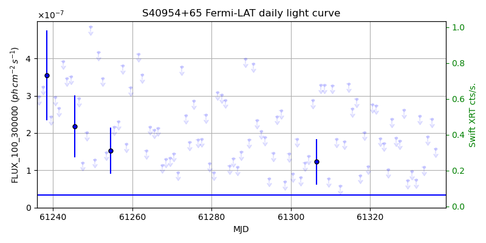
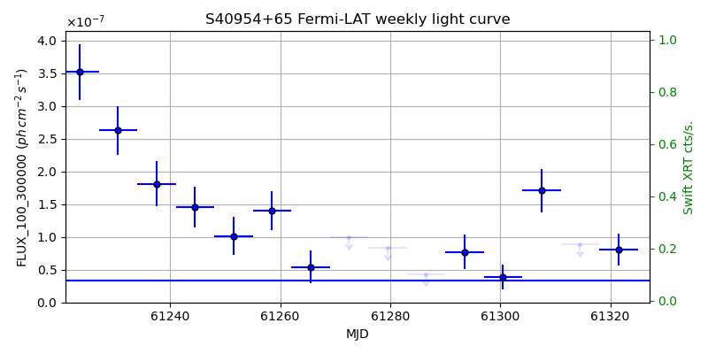
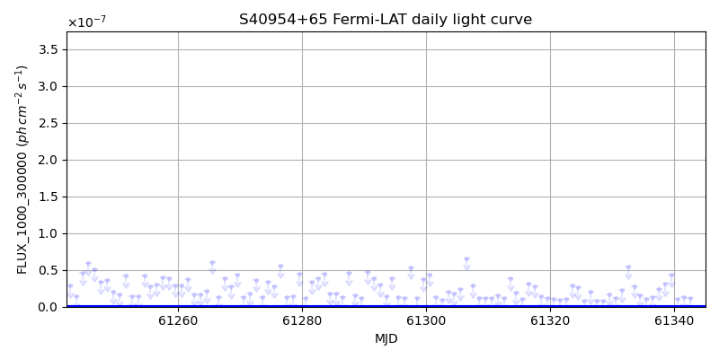
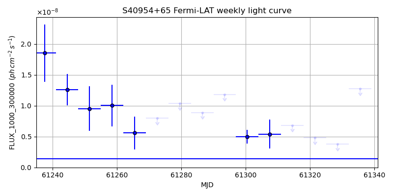

LAT Lightcurve site: https://fermi.gsfc.nasa.gov/ssc/data/access/lat/msl_lc/source/S4_0954p65
Swift site: https://www.swift.psu.edu/monitoring/source.php?source=0954+658
NED: Query
Time of last update of this page: UT: 2026-10-24 15:21 (MJD: 61337.640)
| Property | Value |
|---|---|
| R.A. | 9:58:47.28 |
| Dec. | 65:33:54.0 |
| z | 0.369 |
| 3FGL SpectrumType | PowerLaw |
| 3FGL PL Index | 2.38 |
| 3FGL Flux_100_300000 | 3.33e-08 1 / (s cm2) |
| 3FGL Flux_1000_300000 | 1.38e-09 1 / (s cm2) |
| 3FGL Flux >200 GeV | 9.14e-13 1 / (s cm2) |
| 3FGL Extrap. Crab >200 GeV | 0.00 |
| 3FGL Flux After EBL Absorption >200GeV | 2.40e-13 1 / (s cm2) |
| 3FGL EBL Crab Fraction >200GeV | 0.00 |

| MJD | dMJD | Flux | dFlux | Frac3FGL | FracCrab>200GeV | EBLFracCrab>200GeV |
|---|---|---|---|---|---|---|
| 61332.50 | 0.50 | 2.46e-07 | 0.00e+00 | 0.00 | 0.00 | 0.00 |
| 61333.50 | 0.50 | 1.08e-07 | 0.00e+00 | 0.00 | 0.00 | 0.00 |
| 61334.50 | 0.50 | 1.90e-07 | 0.00e+00 | 0.00 | 0.00 | 0.00 |
| 61335.50 | 0.50 | 2.37e-07 | 0.00e+00 | 0.00 | 0.00 | 0.00 |
| 61336.50 | 0.50 | 1.58e-07 | 0.00e+00 | 0.00 | 0.00 | 0.00 |

| MJD | dMJD | Flux | dFlux | Frac3FGL | FracCrab>200GeV | EBLFracCrab>200GeV |
|---|---|---|---|---|---|---|
| 61300.50 | 3.50 | 3.93e-08 | 1.88e-08 | 1.18 | 0.00 | 0.00 |
| 61307.50 | 3.50 | 1.71e-07 | 3.32e-08 | 5.13 | 0.02 | 0.01 |
| 61314.50 | 3.50 | 8.90e-08 | 0.00e+00 | 0.00 | 0.00 | 0.00 |
| 61321.50 | 3.50 | 8.06e-08 | 2.45e-08 | 2.42 | 0.01 | 0.00 |
| 61328.50 | 3.50 | 7.05e-08 | 0.00e+00 | 0.00 | 0.00 | 0.00 |

| MJD | dMJD | Flux | dFlux | Frac3FGL | FracCrab>200GeV | EBLFracCrab>200GeV |
|---|---|---|---|---|---|---|
| 61332.50 | 0.50 | 5.42e-08 | 0.00e+00 | 0.00 | 0.00 | 0.00 |
| 61333.50 | 0.50 | 2.82e-08 | 0.00e+00 | 0.00 | 0.00 | 0.00 |
| 61334.50 | 0.50 | 1.59e-08 | 0.00e+00 | 0.00 | 0.00 | 0.00 |
| 61335.50 | 0.50 | 1.08e-08 | 0.00e+00 | 0.00 | 0.00 | 0.00 |
| 61336.50 | 0.50 | 1.36e-08 | 0.00e+00 | 0.00 | 0.00 | 0.00 |

| MJD | dMJD | Flux | dFlux | Frac3FGL | FracCrab>200GeV | EBLFracCrab>200GeV |
|---|---|---|---|---|---|---|
| 61300.50 | 3.50 | 4.98e-09 | 1.13e-09 | 3.61 | 0.01 | 0.00 |
| 61307.50 | 3.50 | 5.40e-09 | 2.32e-09 | 3.91 | 0.02 | 0.01 |
| 61314.50 | 3.50 | 6.82e-09 | 0.00e+00 | 0.00 | 0.00 | 0.00 |
| 61321.50 | 3.50 | 4.80e-09 | 0.00e+00 | 0.00 | 0.00 | 0.00 |
| 61328.50 | 3.50 | 3.76e-09 | 0.00e+00 | 0.00 | 0.00 | 0.00 |
--------------------------------------------------------- Using user-supplied coords: 9:58:47.28 65:33:54.0 2000 --------------------------------------------------------- FLWO UT night of: 2026-10-25 Local Sid. @ Midnight: 01:50 Sunset (-15.0) (local, UT): 18:49 01:49 Sunrise (-15.0) (local, UT): 05:27 12:27 Moonrise (local, UT): Moonset (local, UT): Moon phase: 0.99 --------------------------------------------------------- AzTime LSID UT Obj_el Obj_az Mn_el Mn_az Sep. --------------------------------------------------------- 18:49 20:39 01:49 8.5 351.6 26.2 94.5 97.8 19:19 21:09 02:19 7.7 354.6 32.4 98.6 97.5 19:49 21:39 02:49 7.3 357.8 38.6 103.2 97.4 20:19 22:09 03:19 7.2 0.9 44.7 108.4 97.2 20:49 22:39 03:49 7.5 4.1 50.6 114.6 97.0 21:19 23:09 04:19 8.1 7.1 56.2 122.3 96.8 21:49 23:39 04:49 9.1 10.1 61.2 132.2 96.6 22:19 00:09 05:19 10.4 13.0 65.5 145.3 96.4 22:49 00:39 05:49 11.9 15.8 68.4 162.2 96.3 23:19 01:10 06:19 13.8 18.3 69.4 182.2 96.1 23:49 01:40 06:49 15.9 20.7 68.2 202.0 95.9 00:19 02:10 07:19 18.3 22.8 65.1 218.6 95.7 00:49 02:40 07:49 20.9 24.7 60.8 231.3 95.6 01:19 03:10 08:19 23.6 26.3 55.7 240.9 95.4 01:49 03:40 08:49 26.5 27.6 50.1 248.5 95.3 02:19 04:10 09:19 29.5 28.5 44.3 254.6 95.1 02:49 04:40 09:49 32.6 29.1 38.2 259.8 94.9 03:19 05:10 10:19 35.7 29.2 32.1 264.4 94.8 03:49 05:40 10:49 38.9 28.9 26.0 268.5 94.6 04:19 06:10 11:19 41.9 28.1 19.9 272.4 94.4 04:49 06:40 11:49 44.9 26.7 13.8 276.2 94.2 05:19 07:11 12:19 47.6 24.6 7.8 279.9 94.1 05:27 07:18 12:27 48.3 24.0 6.2 280.9 94.0 --------------------------------------------------------- Moon up all night, no dark time. Dark hours >55 deg.: 0.00